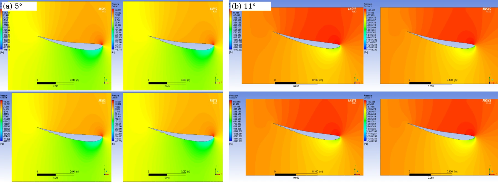
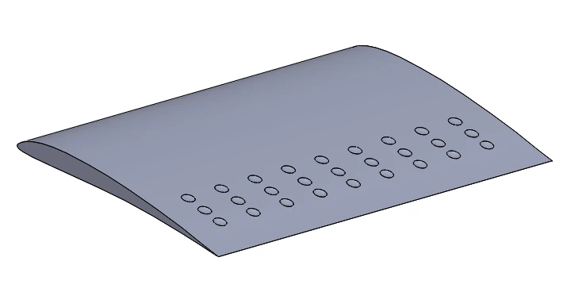
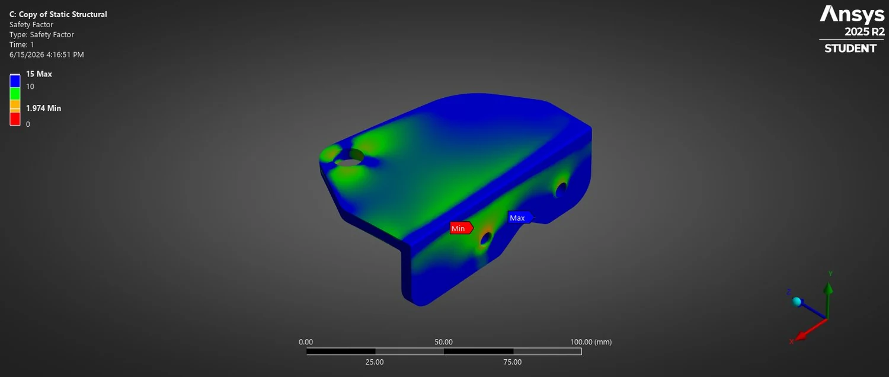

⌁
Aerodynamics and CFD
Flow separation, lift and drag around modified inverted airfoils.
Track-specific research and evidence
My academic work examines a modified inverted BE50 airfoil and lightweight structural design. I am interested in credible numerical methods, mesh convergence, validation and the connection between physics and geometry.
Research focus
Flow separation, lift and drag around modified inverted airfoils.
Mesh sensitivity, boundary conditions and careful interpretation of computed trends.
FEA-based topology redesign and geometry reconstruction.
Research method
Define boundary conditions and engineering geometry
Run mesh sensitivity studies and compare solver settings
Analyze lift/drag and stress fields
Design physical validation before claiming general performance
Future direction
How do trailing-edge dimples affect low-Reynolds-number separation and lift/drag across incidence angles?
How robust are predicted aerodynamic trends to mesh refinement and turbulence-model assumptions?
Can topology-optimized shapes retain safety margins after manufacturability reconstruction and physical verification?
Academic evidence
Status labels distinguish accepted conference work, thesis, drafts, posters and industrial case studies.

Undergraduate thesis on aerodynamic performance of a modified inverted airfoil. Co-author Prashanta Saha; supervisor Prof. Dr. Md. Emdadul Hoque.
My role: Undergraduate researcher

CFD study of surface geometry and airfoil coefficients; grid independence and external validation to be completed.
My role: Simulation and draft development

Authors Afsar Mahmud, Murad Hossain, Hridoy Bhadra. Static-load optimized geometry and mass/stress analysis.
My role: Co-author; specific contributions to confirm